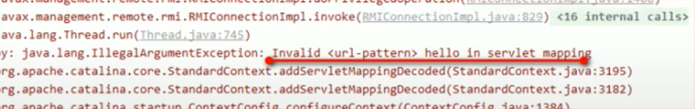

Servlet Web
什麼是Servlet
- 是JavaEE規範之一，規範即介面
- 為JavaWeb三大組成之一(三大組成：Servlet程序、Filter過濾器、Listener監聽器)
- 是用Java編寫的伺服器端程式。其主要功能在於互動式地瀏覽和修改資料，生成動態Web內容
動手實作Servlet程序
- 編寫一個class去實作Servlet介面
- 實現service方法，處理請求，並回應數據
到web.xml中設定servlet程序的連接位址
- 常見錯誤1：url-pattern中設置的路徑沒有以/斜線開頭
- 常見錯誤2：servlet-name設置的值不存在
常見錯誤3：servlet-class名稱錯誤

package ken.servlet.test;
import java.io.IOException;
import javax.servlet.Servlet;
import javax.servlet.ServletConfig;
import javax.servlet.ServletException;
import javax.servlet.ServletRequest;
import javax.servlet.ServletResponse;
public class HelloServlet implements Servlet {
@Override
public void destroy() {
// TODO Auto-generated method stub
}
@Override
public ServletConfig getServletConfig() {
// TODO Auto-generated method stub
return null;
}
@Override
public String getServletInfo() {
// TODO Auto-generated method stub
return null;
}
@Override
public void init(ServletConfig arg0) throws ServletException {
// TODO Auto-generated method stub
}
@Override
public void service(ServletRequest arg0, ServletResponse arg1) throws ServletException, IOException {
System.out.println("Hello Servlet 已連接");
}
}
web.xml:
<?xml version="1.0" encoding="UTF-8"?>
<web-app xmlns:xsi="http://www.w3.org/2001/XMLSchema-instance"
xmlns="http://xmlns.jcp.org/xml/ns/javaee"
xsi:schemaLocation="http://xmlns.jcp.org/xml/ns/javaee http://xmlns.jcp.org/xml/ns/javaee/web-app_4_0.xsd"
id="WebApp_ID" version="4.0">
<display-name>ServletTest</display-name>
<welcome-file-list>
<welcome-file>index.html</welcome-file>
<welcome-file>index.htm</welcome-file>
<welcome-file>index.jsp</welcome-file>
<welcome-file>default.html</welcome-file>
<welcome-file>default.htm</welcome-file>
<welcome-file>default.jsp</welcome-file>
</welcome-file-list>
<!-- servlet標籤給Tomcat設置servlet程序 -->
<servlet>
<servlet-name>HelloServlet</servlet-name>
<servlet-class>ken.servlet.test.HelloServlet</servlet-class>
</servlet>
<servlet-mapping>
<servlet-name>HelloServlet</servlet-name>
<!--
url-pattern標籤設定連接位址
/ 斜線在伺服器解析時，表示地址為：http://ip:port/工程路徑
/hello 表示地址為：http://ip:port/工程路徑/hello
-->
<url-pattern>/hello</url-pattern>
</servlet-mapping>
</web-app>